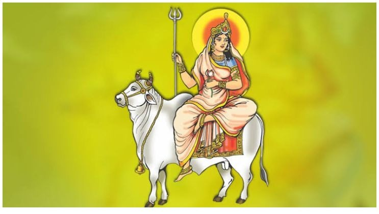

Gauri Puja - Worship of Goddess Gauri

What is Gauri Puja?
Why Perform Gauri Puja?
Benefits
How to Perform
Conclusion
Gauri Puja: Worship of Goddess Gauri
Gauri Puja is a sacred Hindu ritual dedicated to Goddess Gauri, the consort of Lord Shiva. The puja is performed to seek blessings for marital happiness, fertility, and spiritual well-being.
What is Gauri Puja?
Gauri Puja is a ritual dedicated to Goddess Gauri, who is considered an embodiment of beauty, purity, and fertility. She is the consort of Lord Shiva, and Gauri Puja is performed to seek her blessings for a prosperous and blissful married life, children, and spiritual growth.
Why Do We Perform Gauri Puja?
- Marital Bliss: Gauri Puja is believed to bring harmony, love, and understanding between couples, ensuring marital happiness.
- Fertility and Progeny: The puja is performed to bless couples with children and ensure fertility.
- Spiritual Growth: Devotees seek blessings for spiritual growth, purity of heart, and righteousness in life.
- Protection: Goddess Gauri is believed to protect her devotees from evil influences and misfortune.
- Prosperity and Good Health: The puja brings financial prosperity and well-being, ensuring a peaceful and healthy life.
Benefits of Gauri Puja
- Marital Harmony: Gauri Puja fosters love, understanding, and harmony between married couples.
- Blessings of Children: It blesses couples with children and ensures a happy family life.
- Spiritual Growth: The puja helps in spiritual upliftment, leading to a more peaceful and content life.
- Good Health: Gauri Puja brings protection from illness and ensures good health for the family.
- Prosperity: The blessings of Goddess Gauri lead to prosperity, financial stability, and overall well-being.
How to Perform Gauri Puja (Step-by-Step)
Gauri Puja is typically performed during the Gauri Tritiya or other auspicious days dedicated to Goddess Gauri. Here's a step-by-step guide:
- Preparation: Set up an altar with an image or idol of Goddess Gauri, along with flowers, fruits, incense, and other offerings.
- Cleanse Yourself: Take a bath and wear clean clothes (preferably yellow or green), as these colors are auspicious for the worship of Goddess Gauri.
- Offer Flowers and Fruits: Offer fresh flowers (especially yellow or white) and fruits as offerings to Goddess Gauri.
- Light Incense and Lamp: Light incense and a lamp (preferably ghee) to purify the surroundings and invite divine blessings.
- Chant Gauri Mantras: Recite the Gauri mantra, such as "Om Gauryai Namah" or "Om Mahadevyai Namah" to invoke the blessings of Goddess Gauri.
- Prayers: Offer prayers asking for blessings of marital happiness, fertility, prosperity, and spiritual growth.
- Aarti: Perform Aarti while chanting devotional songs to Goddess Gauri to conclude the puja.
- Prasad (Offering): Offer prasad (typically sweets or fruits) to Goddess Gauri and distribute it among family members or devotees.
Conclusion
Gauri Puja is a beautiful and powerful ritual that connects devotees with Goddess Gauri, who blesses them with marital bliss, fertility, prosperity, and spiritual growth. By performing Gauri Puja, devotees can lead a harmonious and fulfilling life, seeking her divine blessings for their well-being and happiness.